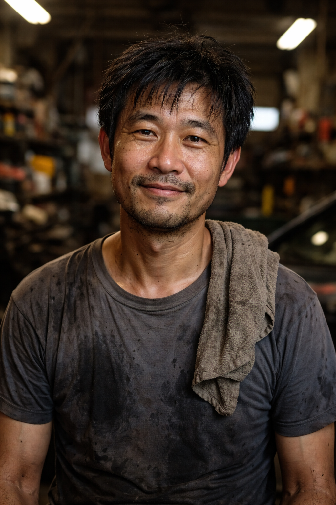
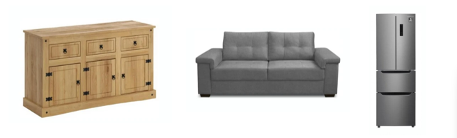
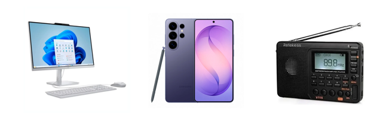
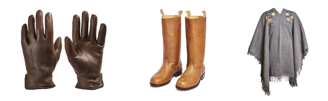

“Trabajo con ellos hace años y la verdad, nunca me han fallado. La mercadería llega cuando tiene que llegar y siempre están a la orden para lo que se precise. Hoy en día eso vale oro.”
Nuestra Propuesta de valor
- Un servicio de logística pensado para el interior, donde no siempre llegan todos, pero nosotros sí.
- Nos destacamos por ser cercanos, cumplir con los tiempos y tratar cada envío como si fuera propio. No somos una empresa grande e impersonal: conocemos las rutas, a la gente y cómo se mueve la mercadería en cada zona.
- Brindamos soluciones simples, claras y confiables, adaptándonos a lo que cada cliente necesita, sin vueltas ni complicaciones.
- Con nosotros, sabés quién lleva tu carga y podés quedarte tranquilo de que va a llegar.
Testimonios de clientes
“Gente seria y de confianza. En el interior nos conocemos todos, y si seguís trabajando con alguien es porque cumplen. Yo los recomiendo tranquilo.”

Pincho Filoseda“Más allá de alguna ida y vuelta, siempre terminamos arreglando bien. Laburan firme y no te dejan tirado, que es lo importante en este rubro.”
Cobertura Logistica
| Región / Departamento | Tipo de cobertura | Frecuencia de entrega |
|---|---|---|
| Artigas | Total | Diario |
| Salto | Total | Diario |
| Rivera | Total | Diario |
| Tacuarembó | Total | Diario |
| Durazno | Total | Diario |
| Florida | Total | Diario |
| Paysandú | Parcial | Diario |
| Río Negro | Parcial | Diario |
| Cerro Largo | Parcial | Semanal |
| Treinta y Tres | Parcial | Semanal |
| Lavalleja | Parcial | Semanal |
| Rocha | Bajo demanda | Quincenal |
| Colonia | Bajo demanda | Quincenal |
| San José | Bajo demanda | Quincenal |
| Canelones | Sin cobertura | - |
| Maldonado | Sin cobertura | - |
| Montevideo | Sin cobertura | - |
Categorías de Productos
Hogar y Muebles

Tecnología

Textil y Calzado
